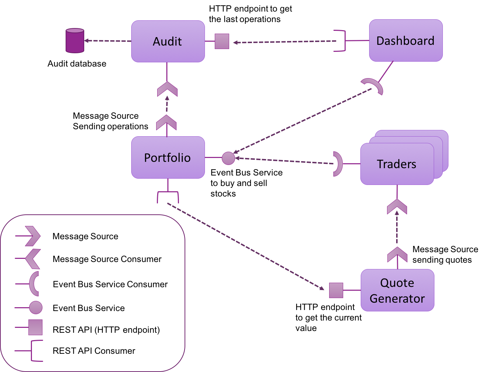
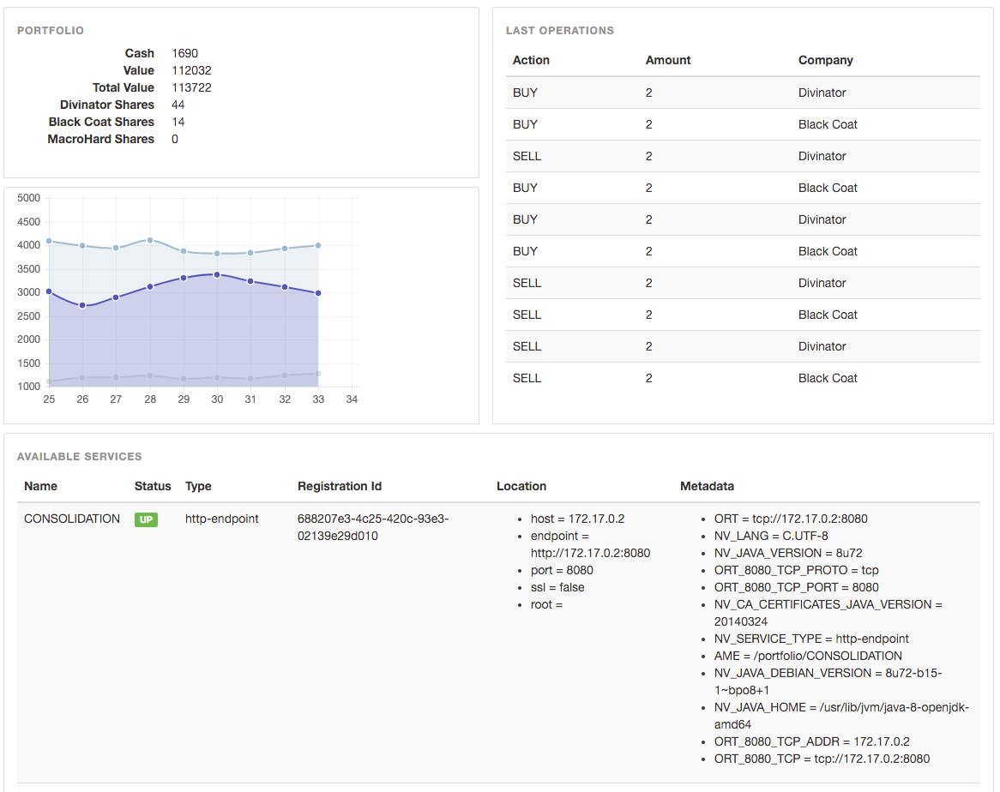
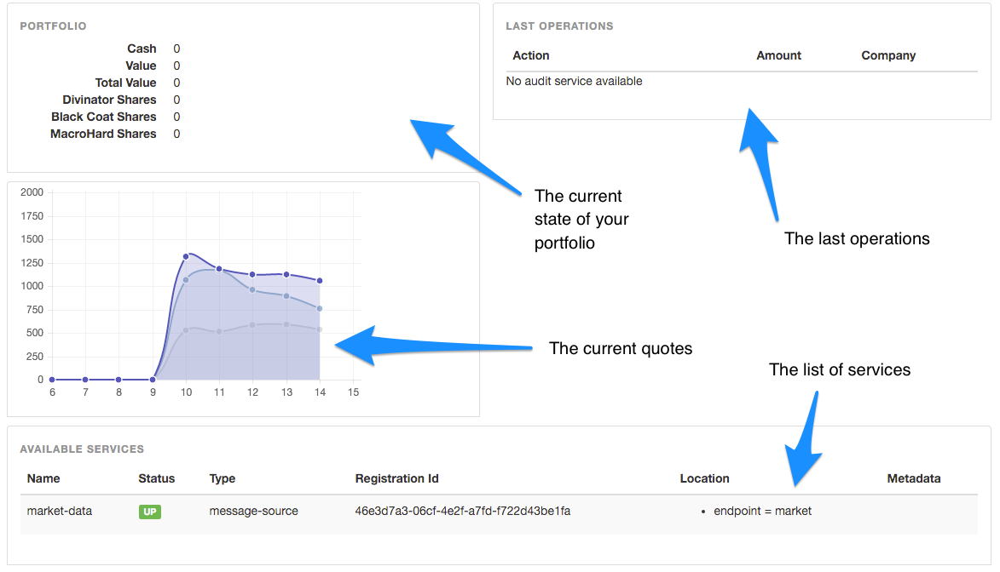
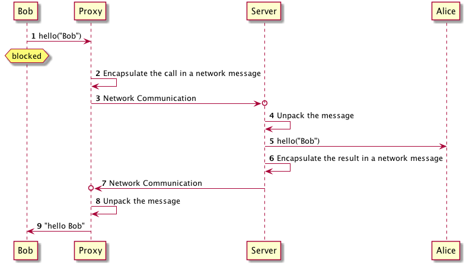
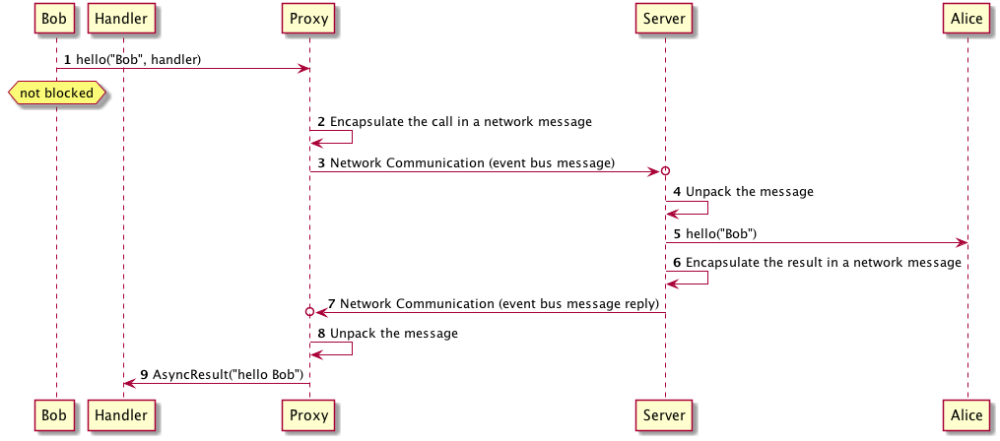
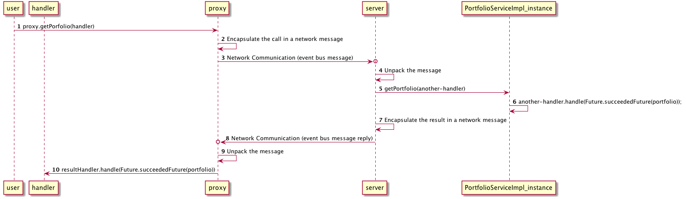
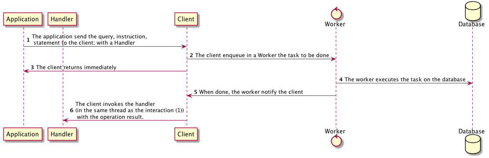
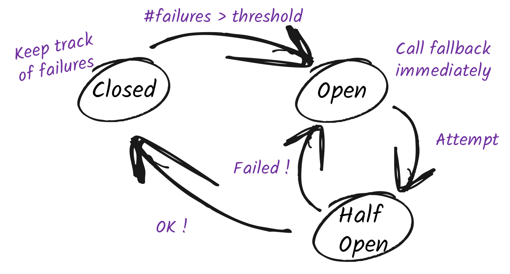

Clement Escoffier, Julien Viet, 沈勇 译Version 0.6,Dec, 23th, 2017 原文：http://escoffier.me/vertx-hol/
1. 前言
让我们从头开始…. Vert.x . 什么是Vert.x? 这是一个好问题，也许是一个非常好的起点。 如果你访问了 Vert.x 网站, Vert.x 的定义是 “用来在JVM上构建反应式（reactive）应用程序的工具箱”。 这个定义不是十分清楚，是吗？什么是 工具箱 ? 什么是 反应式（reactive)应用程序 ? 在这个实验里，我们将要讲解这些术语，并且用Vert.x建立一个应用程序，以此说明什么是Vert.x。这个应用程序是由一组 微服务(microservices) 组成的。再说这是一个流行趋势。不是吗？ 实际上，Vert.x已经极大的促进了 微服务(microservices) 。
我们要写的应用程序会是这样的：
-
基于 Vert.x (这是你为什么看这篇文章的愿意，对吧?)
-
分布式的系统
-
将要是反应式(reactive)系统
-
可以让我们体会点儿乐趣
这个练习可以让参加这得到一些 Vert.x 初级的，第一手的经验。从第一行代码开始，建立服务，消费服务并且最终吧所有的组件装配起来，秉承一个完整的反应式(reactive)系统。 这可以说明什么是反应式(reactive)系统。什么是反应式编程，怎么怎么基于多个反应式微服务 (reactive microservices) 构建应用程序。 多个反应式微服务，多个，这个很重要。
这个练习需要带上你的电脑。请带上你的Windows, OSX或者Linux电脑。我们需要 Apache Maven (3.3+)。
你将要学到什么：
-
什么是 Vert.x, 怎么使用异步非阻塞的并开发模式
-
怎么使用Vert.x开发微服务。我们将使用多种微服务并且应用服务发现(service discovery)
-
什么是
verticles并且如何使用他们。 -
怎么使用 Vert.x 事件总线发送，接收消息。
-
怎么使用 Vert.x 暴露 HTTP 终结点，当然还有怎么消费它们。
-
怎么组合使用异步操作
-
怎么在同一个应用中使用多种语言
-
怎么在 Vert.x 里操作数据库
-
怎么在异步结果 (asymnc results), 未来返回(future)，异常处理器(exception handlers)和断路器(circuit broakers) 中处理故障
-
怎么在 Vert.x 里使用 RxJava
还有很多其他的知识，就不一一列举了…
2. Vert.x
我们会非常简要的介绍一下 Vert.x。你可能还记得，在上一章节，我们已经说过： Vert.x 是 “在JVM上构建反应式程序(reactive applications)的工具箱”。
这里有三个重点： 工具箱, 反应式 和 “基于JVM”.
首先，Vert.x是一个 工具箱。 这是说Vert.x并不是一个应用服务器，一个容器或者一个框架。 它也并不是一个JavaScript开发库。Vert.x是一个朴素的老的 jar 文件，所以一个Vert.x应用程序实际上是一个使用这个 jar 文件的程序。 Vert.x并不强制一个打包的方式。所有Vert.x 模块(components) 都是朴素 平淡 的 jar 文件。 这将怎样影响你的应用程序呢？让我们想象你在使用一个项目构建工具，比方说Maven或者Gradle, 去建立你的应用程许，一个 Vert.x 应用程序，其实就是吧 vertx-core 加入到依赖项里。 你想使用其他的 Vert.x 组件吗？请把它驾到你的依赖项里。这很简单，毫无负担，不是吗。 启动这个程序就是启动一个简单实现了 public static void main(String[] args) 的类。我们不需要任何特殊的IDE或者插件去安装和开始使用 Vert.x。
因此，使用 Vert.x 的精彩特性，你只需要把它写在你的代码里。但是稍等一下，我们很快就会用起来了。
其次， Vert.x 是 反应式 。它就是要用来建立反应式应用程序，或者更贴切的说法是 系统 。 反应式系统 [1] 在 反应式宣言 已经有了很好的定义。这虽然不是一个非常长的文档，我们还是把它缩减到一下四个要点：
-
及时相应：一个反应式系统需要在 合理 的时间处理请求 (你可以根据应用场景自己定义 合理 )。
-
有弹性： 一个反应式系统必须在出现 故障 (崩溃，超时，
500错误 …) 的情况下，仍然及时作出相应。系统的是 为了故障而设计的 并且能够合理的处理故障。 -
有灵活性: 一个反应式系统必须在不同负载情况下及时相应。因此，它必须能够向上，向下扩展。并且能够在极小资源的情况下处理一定的负载。
-
消息驱动: 反应式系统里的各个组件之间，通过 异步消息传递 相互作用。
再次，Vert.x 是一个事件驱动和非阻塞的。事件被投递到一个 永不阻塞的 事件循环 里。为什么呢？不象传统系统，象 “企业级” 系统，Vert.x只使用非常少的线程。 有一些线程是 事件循环, 它们在 处理器（Handlers） 之间派发事件。如果你把某个线程阻塞了，事件将不能继续派发。这个执行模式将影响你如何写代码，不同于 传统mofrl 阻塞代码，你的代码将是异步的 [2] 和非阻塞的 [3]
举一个例子，如果你要得到一个基于URL的资源，你需要这么做：
URL site = new URL("http://vertx.io/");
BufferedReader in = new BufferedReader(new InputStreamReader(site.openStream()));
String inputLine;
while ((inputLine = in.readLine()) != null) {
System.out.println(inputLine);
}
in.close();
但是用 Vert.x 的话，你就需要这么做：
vertx.createHttpClient().getNow(80, "vertx.io", "", response -> {
response.bodyHandler(System.out::println);
});
这两段代码有以下不同：
-
第一个用的是同步调用的并且有可能被阻塞：所有指令都是 顺序 执行的,而且可能把线程阻塞相当长的一段时间(因为网站本身可能会很慢)。
-
基于 Vert.x 的程序是异步和非阻塞的：在和HTTP服务器建立连接的过程中，线程(事件循环)本身已经被释放了，所以它可以做其他的工作。当响应返回的时候， 那个相同 的事件循环会调用 回调函数。大多数的 Vert.x 组件都是单线程的(只有一个线程去访问它)，所以不需要任何同步机制。另外，使用 Vert.x ，象 DNS 解析这样的事件都是异步和非阻塞的 (其实Java DNS解析是阻塞的)。
最后，Vert.x 应用是运行在 “JVM之上” ，Java虚拟机版本8以上。 这说明 Vert.x 应用程序可以使用任何可以运行在 JVM 上的语言开发。这包括 Java (当然如此), Groovy, Ceylon, Ruby, JavaScript, Kotlin 和 Scala 。 我们甚至可以把所有这些语言混合成任意组合。Vert.x 程序的多语言的特性可以让我们使用在具体任务中使用适合的语言。
Vert.x 让你实现的分布式应用，可以使用内建的 TCP 和 HTTP 服务器和客户端，也可以让你使用 Vert.x 事件总线，这是一个轻量级的收发消息的机制。 使用事件总线，我们可以发送消息到 地址(address) 。它支持一下三种分布模式：
-
点对点 ： 消息指发送给一个监听这个地址上的 消费者(consumer) 。
-
发布/订阅 ： 消息会被所有监听在这个地址上的所有 消费者(consumer) 收到。
-
请求/应答 ： 消息回发送给一个 消费者(consumer) , 它 应答 这个消息并且把另外一个 消息 发送回初始的发送者。
哇唔！，这已经有很多信息需要同学们消化了… 但是，你可能还要追问：我用 Vert.x 可以建立什么样的应用？ 我们会说， Vert.x 是难以置信的灵活，简单的网络工具，复杂的现代Web应用， HTTP/REST 微服务，高强度的事件处理或者负载高企的后端消息总线应用，Vert.x 都能非常好的适应。 它真的非常快，不会限制你。最后一点，但不是最无赶紧要的一点， Vert.x提供合适的工具去构建反应式系统；及时响应, 灵活的, 有弹性和异步 的系统。
3. 揭开微服务(microservice)的神秘面纱
除非你之前两年一直在山洞里生活，你肯能已经听说过 微服务(microservices) 。 那么，什么是 微服务 呢？ 为了回答这个问题，让我们看看老鸟怎么说：
微服务架构风格是通过一组小服务来构建一个应用程序的方法。每个服务运行在他自己的进程里，它们通过轻量级的机制相互通信，通常是 HTTP 资源 API。 这些服务对应这业务要求，并且每个服务可以独立的使用全自动方式部署。 这里极少需要的中心化管理这些服务。它们很有可能是用不同的编程语言编写，并且有可能使用完全不同的存储技术。
— Martin Fowlerhttp://martinfowler.com/articles/microservices.html
微服务 是一种 架构风格 ，这说明它是一个 元素和关系类型的规范，加上限制条件和如何使用它们的方法 [4]。我相信到此为止，我让你比刚开始更摸不到头脑了。
不用担心。我们从另外的方式来说明。 我们为什么需要 微服务 ？ 三个字 灵活性 [5]。 让我们想象一下，我们有一个挺大的应用。 像任何一个大的应用一样，维护它就像一个噩梦。增加功能需要太长的时间。 很多过时的技术还在线上(什么？Corba已经不时髦了吗？)，任何改变都需要执行一个50个步骤组成的流程，并且需要5个层级的管理组织来确认。 很明显，我们需要几个组在这个应用上工作，它们有不同的需求和日程表。好吧，这个应用就是 怪兽级应用 。 我们怎么才能让开发和维护这个系统更有效呢？ 微服务就是这个问题的一个答案。它就是要减少 上线时间 。
为了做到这一点， 微服务 架构风格建议如下几点：
-
把应用本身分割成一个相互不耦合的组件集合。每个组件都提供事先定义好的
服务(定义好的 是说一个已知的接口或者API) -
允许组件之间可以选择任意通信协议。REST可能经常用到，但是不是必须的。
-
允许使用任意的编程语言和技术去实现组件。
-
允许任何一个组件独立的开发，发布和部署。
-
允许部署方法是给予组件选择的 流水线 自动化的 完成。
-
允许整个应用的整体协调机制可以缩减到最小。
在这个实验课，我们不会涉及到第5点，但是你很容易理解 Vert.x 并不会限制你怎么部署你的组件。 你可以应用任何你觉得最适合你的系统环境的方式部署，比方说 ssh, ansible, puppet, docker, cloud, fabric8 甚至是用软盘。
第6点，尽管它很有意思，但同时经常被误解。开发相互独立的几个软件并且神奇地在运行时相互协作，这不是很酷吗？是的，技术上讲，我说的 神奇地 并不是魔术。 为了能够让他们一起工作，我们需要运行时的服务 发现 。服务发现机制可以用各种方式做到。我们能够考虑到的有：对服务地址硬编码(这通常不是一个好主意)，使用 DNS 检索服务，或者其它高科技方法。
有一个服务发现机制存在的情况下，我们系统中的各个组件之间可以在不同位置和环境之间透明的相互交互。我们也可以很容易的在组件之间负载平衡，比方说使用轮叫方式，这也可以在一定程度上提高系统对故障的容忍度(我们可以在一个服务提供者失效的情况下，使用另外一个)。
虽然微服务理论上没有必要是分布式的，但是它经常是分布式的。它具有分布式系统所有的优点和限制：共识算法（FLP），CAP理论，一致性，系统监视，和其他出现故障的可能行。所以，微服务应用需 要从一开始就要涉及如何处理故障。
在我们继续之前，还有几个需要讲的点： 微服务 不 是一个高科技的新概念。70年代，80年代的学术论文已经定义了非常类似的架构风格。当然他们用的是不同的词。 一个需要理解的重点是：微服务不是银弹。除非精心管理，它有可能提高你应用的复杂性，因为这是一个分布式的架构。最后，一个微服务架构不肯能包治百病。
如果微服务可以快速发布，适配好，独立，和可替换的话，我们还会严重担心。每个微服务在建立指出都可以被其他提供相同 服务 / API / 接口 替代。 (本质上，这就是一个 Liskov substitution principle 应用)。
如果你已经干开发10年了，你可能会问微服务和SOA的不同之处。对很多人来说，大小是一个不同点。但这并不准确，一个服务并不一定非常小，“微服务”这个词有时候也会引起误解。微服务和SOA的目的不同，但是有很多相同点：
-
服务： 一个可以用API，客户端或代理等访问的定义好的功能
-
服务提供者：一个组件提供了一个服务
-
服务消费者：一个组件在消费一个服务
-
服务发现：一个机制用来让消费者找到提供者
这两种概念都是从 面向服务计算 继承下来的。它们都关注解分解和管理独立软件模块。你有可能没有听说过但是可能用过这些技术：COM, Corba, Jini, OSGi, 和 Web Service。它们都是不同的 面向服务计算 的具体实现。
最后，有些人会晤解微服务必须是 RESTful 的。这不是事实。微服务可以依赖不同的交互风格，当然最适合的是： RPC， 事件，消息，流，等等。在这个实验课，我们会使用 RESTful 服务，异步 RPC 和消息源。
4. 微交易员应用
现在你了解了 Vert.x和微服务。是时候开始讨论我们需要在实验课实现的程序了。
这是一个假金融程序，它会赚虚拟货币。应用本事是一组微服务构成的:
-
报价生成器(quote generator) - 这是一个不现实的模拟器，它会生成三个虚构公司的股票报价。MicroHard, Divinator, 和 Black Coat 。市场信息会被发不到 Vert.x 事件总线上。
-
交易员(traders) - 有几个组件是在接受从报价生成器发布的报价，他们会决定买卖某个特定股票。为了能够作决定，它们依赖 投资组合(portfolio) 服务。
-
投资组合(portfolio) - 这个服务管理着投资组合里的所有股票和他们的价值。它暴露了一个 服务代理(service proxy), 也就是一个在 Vert.x 事件总线上的异步RPC服务。每一个成功的操作，它都会发送一个消息到事件总线上。它使用报价生成器来计算当前投资组合的价值。
-
审计(audit) - 这是法律要求的。我们需要需要记录所有的操作。审计组件会从时间总线和地址上接收所有投资组合服务的操作。它会把这些信息写到数据库里。它还会提供一个 REST 端点来让其它组件获得最后的几笔操作。
-
仪表盘(dashboard) - 这个图形界面会让你看到自己在变得富有。：）
我们可以看一下架构：

这个应用使用了以下集中类型的服务:
-
HTTP 端点(endpoint) - 像 REST API 这个服务可以通过 HTTP URL 找到。
-
服务代理 - 这是暴露在事件总线上的异步服务。它使用了 RPC 交互机制。这种服务可以通过事件总线上的地址找到。
-
服务源(Message sources) - 这些组件会像事件总线上发布消息。这种服务可以通过事件总线上的地址找到。
这些组件都在同一个网络环境上运行(在这个实验课里，它们是在同一台机器上的不同进程而已）。
仪表盘会显示所有可用的服务，每个公司的报价，我们交易员最后几笔交易操作，和当前投资组合的状态。它同时还显示不同代理的状态信息。

虽然已经有一些代码显示了 Vert.x 的功能，我们将要亲自实现这个应用的关键部分。需要我们写的代码都被清除的标明 TODO，就像下面的例子：
//TODO// ----// your code here// ----
5. 预先准备
我们要学习新知识，马上就要编程序了… 但是，在我们开始之前，我们需要安装一些软件。
5.1. 硬件
-
操作系统: Mac OS X (10.8+), Windows 7+, Ubuntu 12+, CentOS 7+, Fedora 22+
-
内存: 至少需要 4 GB+, 最好 8 GB
5.2. Java开发工具包
我们需要安装 JDK 8+。 最新的 JDK 可以从一下链接下载:
你可以使用 Oracle JDK 或者 OpenJDK。
5.3. Maven
-
你可以从这里下载 https://maven.apache.org/download.cgi 。
-
解压到一个目录下以后，把它驾到你的
PATH环境变量里。
5.4. IDE
我们推荐你使用 IDE. 你可以使用 Eclipse, IntelliJ 或者 Netbeans。
5.4.1. 没有 IDE ?
如果你没有 IDE, 一下步骤可以让你准备好 Eclipse。
-
从这里 下载页面 下载 Eclipse.
-
在 Eclipse Package 列表, 选择 Eclipse IDE for Java Developers 。他会把你带到一个有
Download按钮的页面。 -
下载之后解压。
-
在目标路径里，你可以找到
Eclipse执行程序。运行它就好了。 -
Eclipse 会问你需不需要建立一个工作空间。
-
打开 Eclipse 之后点 Workbench 箭头 (在右上角).
6. 我们开始 !
6.1. 获取代码
git clone https://github.com/cescoffier/vertx-microservices-workshop
你可以把代码作为 Maven 导入到 IDE 里。你可以参考 IDE 的文档。
对与 Eclipse:
-
点击
File - Import … - Maven - Existing Maven Projects -
选择你克隆源代码的位置
-
点击 Finish 并且稍等…
你会看到几个编译错误。这是因为 Eclipse 默认设置没有把 src/main/generated 作为 源代码跟路径(source root) 。 右键点击 portfolio-service/src/main/generated 并且选择 Build Path → Use as Source Folder.
完整的解决方案在 solution 路径下.
6.2. 编译打包
整个构建过程是由 Apache Maven 管理的。 编译整个应用，你只需要：
cd vertx-microservices-workshop
mvn clean install
我们之前说过， Vert.x 不依赖 Apache Maven 。 你可以使用任何构建工具 (甚至不需要构建工具) 。
6.3. 集群和服务发现基础设施
现在差不多可以开始了。如果你还记得在微服务那一章节，我们需要服务发现机制。非常幸运的是， Vert.x 提供了这种机制。 为了让每个组件发现服务，它需要把服务的 记录(record) 存储在某个可以访问到的地方。
默认配置情况下， Vert.x 服务发现机制会使用分布式映射(map)，它可以被所有的集群成员访问到。 所以当你启动 Vert.x 应用程序并且开启集群模式的时候，它会加入一个集群。 这个集群里的节点都可以：
-
加入和离开这个集群，也就是管理 成员(menber) 路径。(成员 != 服务)
-
通过分布式映射，锁，计数器等分享数据
-
访问事件总线
在我们的上下文里，我们不需要配置什么。这个实验课材料里已经给出了集群的配置。它是基于单点通讯并使用 127.0.0.1 IP 地址。(因此你不能在相邻的计算机上找到这些服务)。这个集群是基于 Hazelcast。如果你感兴趣的话，请查看配置文件 vertx-workshop-common/src/main/resources/cluster.xml。
7. 第一个微服务 - 报价生成器
免责声明，这个报价生成器纯属虚构，报价全部是随机生成…
7.1. 项目结构
让我们看一下这个项目，所有项目都有类似的结构。
├── README.md <--- 组件的描述
├── pom.xml <--- Maven 文件
└── src
├── conf
│ └── config.json <--- 项目配置文件，应用程序在启动时要加载配置项
└── main
└── java
└── io.vertx.workshop.quote
├── GeneratorConfigVerticle.java <--- 竖直体(Vertical)
├── QuoteVerticle.java
└── RestQuoteAPIVerticle.java
让我们从 pom.xml 文件开始。文件定义了 Maven 如何编译打包：
-
定义依赖项
-
编译java代码和处理资源(如果有的话)
-
构建胖jar包 fat-jar
一个胖jar包 fat-jar (也叫 uber jar 或者 shaded jar) 是一个方便打包 Vert.x 应用程序的方法。 它生成一个包含应用程序和所有依赖项的 uber-jar ，当然也有 Vert.x。然后，你只需要 java -jar 命令来启动这个程序，这样省去了 CLASSPATH 的配置。 等一下，我们说过，Vert.x 并不需要特定的打包方式。这确实是对的。 胖jar包只是为了方便，你也可以用普通jar包，OSGi 捆(budles)。
创建出的 fat-jar 使用了一个相同的主类，它 (io.vertx.workshop.common.Launcher) 在 vertx-workshop-common 里已经提供了。 这个 Launcher 类会启动 Vert.x 实例，配置它，并且部署 主竖直体(main-verticle)。 在此说明，这只是为了方便，你可以写你自己的 主(main) 类。
7.2. 竖直体(Verticle)
你也许已经注意到了，代码由三个 竖直体(verticles) 组成。但是它们是什么？竖直体是一种 Vert.x 应用代码的结构。 这不是必须的，但是这确实非常方便。一个竖直体是部署在 Vert.x 实例之上的一段代码。 一个竖直体可以访问它部署到的 vertx 实例。它也可以部署其他竖直体。
让我们打开 GeneratorConfigVerticle 类，并且看一下 start 方法。
@Override
public void start() {
super.start();
JsonArray quotes = config().getJsonArray("companies");
for (Object q : quotes) {
JsonObject company = (JsonObject) q; // 使用配置参数启动竖直体
vertx.deployVerticle(MarketDataVerticle.class.getName(), new DeploymentOptions().setConfig(company));
}
vertx.deployVerticle(RestQuoteAPIVerticle.class.getName());
publishMessageSource("market-data", ADDRESS, rec -> {
if (!rec.succeeded()) {
rec.cause().printStackTrace();
}
System.out.println("Market-Data service published : " + rec.succeeded());
});
publishHttpEndpoint("quotes", "localhost", config().getInteger("http.port", 8080), ar -> {
if (ar.failed()) {
ar.cause().printStackTrace();
} else {
System.out.println("Quotes (Rest endpoint) service published : " + ar.succeeded());
}
});
}
竖直体可以通过 config() 方法得到配置参数。这里它的到了需要模拟的公司的详细信息。 配置参数是通过 JsonObject 传递的。 Vert.x 经常使用 JSON，所以你将在这个实现课里看到非常多的 JSON。 对每个配置参数里的公司，这个竖直体都会部署另一个相应的竖直体，传入提取的配置参数。 最后，这个竖直体，部署另外一个竖直体来提供一个简单的 HTTP API。
这个函数的剩余部分和服务发现有关系。我们在微服务章节提到过服务发现。 这个组件生成报价信息，并且发送到事件总线上。为了让其他的组件得知消息发送到什么地方 (消息发送地址），它注册地址。 market-data 就是这个服务的地址， ADDRESS 是事件总线的地址，消息将发送到这个地址上。 最后一个参数是一个 处理器(Handler)， 它会在注册完成之后被触发。 handler 会收到一个 AsyncResult 结构体。
请记住， Vert.x 是在提倡异步，非阻塞开发风格。发布服务会花时间 (实际上，它会建立一个记录，并把这个记录写到后端，然后通知所有人), 我们不能阻塞事件循环，所以这个方法也是异步的。异步方法都会有一个 Handler 作为最后一个参数，它会在操作完成之后被调用。 这个 Handler 收到一个 AsyncResult，表示操作成功与否。你将要在 Vert.x 里看到很多这样的模式：
// 返回 X 类型的一个对象的异步方法。
operation(param1, param2, Handler < AsyncResult < X >> );
// 收到X 类型的一个对象的处理器。
ar -> {
if (ar.succeeded()) {
// 用 X 继续做工作。
X x = ar.result();
} else {
// 操作失败了。
Throwable cause = ar.cause();
}
}
如果你还记得程序的架构，报价生成器也会提供一个 HTTP 端点来返回报价的最新值 (你会实现它)。 像上一个服务一样，它需要被发布。为了发布，我们给出了它的详细位置 (服务器地址，端口…):
publishHttpEndpoint("quotes", "localhost", config().getInteger("http.port", 8080), ar -> {
if (ar.failed()) {
ar.cause().printStackTrace();
} else {
System.out.println("Quotes (Rest endpoint) service published : " + ar.succeeded());
}
});
7.3. REST 报价服务端点
是时候开发这个程序的一些部分了(你手里已经有需要工具了)。请打开 RestQuoteAPIVerticle。这是一个从 AbstractVerticle 扩充的竖直体。 在 start 方法，你需要：
-
注册一个事件总线的消费者来收集最新的报价信息 ( 从`quotes` 映射)。
-
接收 HTTP 请求，并且返回报价列表，或者当
name被指定的情况下返回单个公司的报价。
开工….
7.3.1. 任务 - 实现一个接收事件的处理器
第一个任务是建立一个 处理器(Handler)，这是一个事件到达时被调用的方法。处理器是 Vert.x 非常重要的的部分，所以理解它们很重要。
在这个任务里，任何一个消息送达到 address 指定的事件总线(它接收每一个从报价生成器产生的报价)时，Handler 就会被调用。 他是一个 消息消费者 (message consumer) 。 message 参数就是收到的消息。
实现的逻辑就是收到消息体(通过 body() 方法)。然后获取消息体中报价的 name， 然后在 quotes 映射里添加一个 name → quote 的条目。
JsonObject quote = message.body(); // 1
quotes.put(quote.getString("name"), quote); // 2
首先，它得到了消息体 (1)。这是一个 JSON 对象。然后把它存储到 quotes 映射里 (2)。
7.3.2. 任务 - 实现一个处理 HTTP 请求的处理器
现在你已经实现了第一个 Handler，让我们实现第二个。这个处理器不从事件总线获得消息，而是获得 HTTP 请求。 这个服务器绑定在 HTTP 服务器上。它会在每次 HTTP 请求到达这个服务器的时候背调到。它负责写响应。
为了处理 HTTP 请求，我们需要 HTTP 服务器。幸运的是，Vert.x 可以让你用以下方法建立 HTTP 服务：
vertx.createHttpServer().requestHandler(request -> {...}).listen(port, resultHandler);
请求处理器会做以下步骤来产生响应的内容： Write the content of the request handler to respond to the request:
-
请求需要在消息头里把
content-type设置成application/json。 -
获取
name参数，这是一个公司名。 -
如果公司名没有设置，通过 json 格式返回所有的报价。
-
如果公司名设置了，返回存储的报价信息，或者在不知道公司名的情况下返回 404。
我们可以通过 request.response() 拿到一个请求的响应。
我们通过 response.end(content) 给响应写入内容。
为了生成 JSON 表示的对象，我们使用 Json.encode 方法。
HttpServerResponse response = request.response().putHeader("content-type", "application/json");
String company = request.getParam("name");
if (company == null) {
String content = Json.encodePrettily(quotes);
response.end(content);
} else {
JsonObject quote = quotes.get(company);
if (quote == null) {
response.setStatusCode(404).end();
} else {
response.end(quote.encodePrettily());
}
}
从 request 对象里拿到 response
获得 name 参数 (查询参数)
把映射编码成 JSON 格式
用 end(…) 把响应写入并刷新它
如果名字不能匹配出一个公司，设置状态值 404
你有可能疑惑为什么不需要同步。实际上，我们读写映射时，没有使用任何同步机制。 这其实是 Vert.x 的一个主要特性： 所有这些代码会在 同一个 事件循环中运行。所以它永远被 同一个 线程访问。不会有有并发。
Map<String, JsonObject> 也可以被简单替换成 JsonObject 他基本上就是 Map<String, Object>。
7.4. 是时候启动报价生成器了
现在，我们把这个微服务编译打包成 fat-jar. 在终端:
cd quote-generator
mvn package
然后，打开一个新的终端并且启动它：
java -jar target/quote-generator-1.0-SNAPSHOT-fat.jar
这个命令启动了应用程序。主类创建了一个集群化的 Vert.x 实例，并且从 src/conf/config.json 里读取配置参数。 这个配置提供了 REST 服务需要的 HTTP 端口 (35000)。
我们可以打开浏览器看一下链接 http://localhost:35000 。
返回的内容看起来应该是：
{
"MacroHard": {
"volume": 100000,
"shares": 51351,
"symbol": "MCH",
"name": "MacroHard",
"ask": 655.0,
"bid": 666.0,
"open": 600.0
},
"Black Coat": {
"volume": 90000,
"shares": 45889,
"symbol": "BCT",
"name": "Black Coat",
"ask": 654.0,
"bid": 641.0,
"open": 300.0
},
"Divinator": {
"volume": 500000,
"shares": 251415,
"symbol": "DVN",
"name": "Divinator",
"ask": 877.0,
"bid": 868.0,
"open": 800.0
}
}
它给了当前报价的详情。报价将会每3秒更新一次。你可以刷新你的浏览器来得到最新的数据。
我们可以启动仪表盘。在另外一个终端，进入 $project-home/trader-dashboard 路径并且执行下面的命令：
mvn clean package
java -jar target/trader-dashboard-1.0-SNAPSHOT-fat.jar
接着，打开浏览器访问 http://localhost:8080。你应该能看到：

有一些部分还没有内容，在一开始这不意外…
7.5. 你不是金融专家 ?
也许你没有习惯金融和他的专业名字… 我也没有，我们讨论的范围金融是非常简化的版本。 为了方便理解，让我们定义哪些非常重要的字段。
-
name: 公司名 -
symbol: 公司名缩写 -
shares: 股票的数量，我们可以购买它 -
open: 股票在开盘时的价格 -
ask: 股票在你买的时候的价格，既卖价 -
bid: 股票在你卖的时候的价格，既买价
你可以访问 Wikipedia 得到更详细的说明。
8. 事件总线服务 - 投资组合服务
在报价生成器里，我们已经尝试了一些基础的 Vert.x 开发：
-
异步 API 和
AsyncResult -
实现处理器
Handler -
从事件总线上接收消息
在投资组合组件里，我们将要实现一个 事件总线服务(event bus service)。一个 投资组合(Portfolio) 存储了拥有的股份和可用的现金。
8.1. 远程过程调用(RPC) 和异步远程过程调用
微服务不仅是关于 REST。它可以用不同的交互操作方式暴露出来。 并且 远程过程调用 就是其中的一种。 通过 RPC ，一个组件可以使用本地调用有效的发送一个请求到另外一个组件，请求会被打包到一个消息里并且发送给被调用者。 结果会以类似的方式发送回调用者作为过程调用的结果。

这样的互操作的好处是强类型。这比非结构化的消息减少了出问题的可能性。但是，这使调用者和被调用者之间的耦合增强了。调用者要知道怎么调用：
-
怎么调用这个服务
-
这个服务运行在哪里？
传统的 RPC 有一个讨厌的缺点： 调用者必须等待，直到接收到应答。一次调用至少需要两个网络消息，这明显是一个阻塞的调用。 另外，这不能很好的处理分布式通信中各个环节都可能出现的故障。
幸运的是，Vert.x 提供了一个不同方式的 RPC ：异步 RPC。 异步 RPC 和同步 RPC 有相同的原则。 但是，它不会 等 响应，它传入一个 Handler<AsymcResult<X>>，以便在结果收到以后调用。

AsyncResult 会通知 Handler 这次调用是成功了还是失败了。当成功返回时，处理器会得到结果。
这种异步 RPC 有几个有点：
-
调用者不会被阻塞
-
它可以处理故障
-
你可以不用在事件总线收发消息。底层实现上，它帮助你组包和解包。
8.2. 异步服务接口
建立一个异步 RPC 的服务，或者事件总线的服务，或者一个服务代理。你首先需要一个 Java 接口来声明异步方法。 请打开 io.vertx.workshop.portfolio.PortfolioService 类看一下。
这个类被标注成：
-
ProxyGen- 开启事件服务代理和服务器的代码生成 -
VertxGen- 开启多 Vert.x 语言支持代理的代码生成。
我们看一下第一个方法：
void getPortfolio(Handler<AsyncResult<Portfolio>> resultHandler);
这个方法帮助你获取一个 Portafolio 对象。就像上面解释的那样，这个消息是异步的，所以它需要一个 Handler 参数来接收 AsyncResult<Portfolio>。 其他的方法也都使用这种模式。
你可能已经注意到这个包里有 package-info.java 文件。 这个文件是用来开启服务代理代码生成的。
8.3. 数据对象
Portfolio 对象是一个数据对象。事件总线代理支持有限的类型，对于不支持的类型，它必须使用 数据对象(data object) (请查看 文档知道所有支持的类型)。 数据类型是 Java 类型，它们遵循以下相知：
-
他必须标注成
DataObject -
它必须有一个空构建函数，一个拷贝构建函数，和一个基于
JsonObject的构建函数 -
它需要有一个
toJson方法来构建相应的JsonObject -
字段必须是有 属性(property) (有 getters and setters)
我们可以打开 io.vertx.workshop.portfolio.Portfolio 类，看一下它的内容。正如你看到的，所有的 JSON 处理都是通过自动生成的 converters 完成的。 所以一个数据对象非常接近一个简单的 bean。
8.4. 实现服务
完美，我们已经有了一个服务的异步接口。我们需要实现服务本身。这里，我们需要实现三个方法：
-
getPortfolio如何返回AsyncResult对象 -
sendActionOnTheEventBus来发送异步消息到事件总线上 -
evaluate计算当前投资组合的当前价值
8.4.1. 任务 - 创建 AsyncResult 实例
正如我们已经看到的，我们的异步服务有 Handler<AsyncResult<Portfolio>> 参数。 所以当我们实现这个服务的时候， 我们需要使用 AsyncResult 类调用 Handler。 要想知道这是怎么工作的，让我们实现 getPortfolio 方法吧：
在 io.vertx.workshop.portfolio.impl.PortfolioServiceImpl，填充 getPortfolio 方法. 它应该调用 resultHandler 的 handle 方法，传入一个 成功 (sucessful) 异步结果。这个对象可以通过 Vert.x Future 方法获得。
resultHandler.handle(Future.succeededFuture(portfolio));
哇唔… 只需要一行代码而已？让我们解析以下：
-
resultHandler.handle: 这是在调用Handler.Handler<X>只有一个方法 (handle(X)). -
Future.succeededFuture: 这是构建一个表明成功的AsyncResult实例，传递的值是一个返回结果 (portfolio)
等一下，AsyncResult 和 Future`有什么关系？ 一个 `Future 表示一个行动的结果，可能成功，可能失败，还没有确定。 如果 Future 只是为了用来表明成功或者失败的状态，结果可能是 null。 Future 对象背后的操作可能成功或者失败。 AsyncResult 是一个表示一个操作成功和失败的结构。所以， Future 是一种 AsyncResult。 在 Vert.x里， AsyncResult 实例是通过 Future 类型构建的。
AsyncResult 描述了:
-
成功返回，它会封装一个结果
-
一个故障，它会封装一个
Throwable实例
你知道吗？术语 Future 早在1977就有了, Promise 是在 1976… 都不是新鲜事了。
那么，这些怎么和异步 RPC 工作的呢？让我们看一下时序图：

8.4.2. 任务 - 在事件总线上发送事件
在上一章，我们注册了一个接收事件总线服务的消费者。现在是时候知道如何发送消息了。我们通过 vert.x.eventBus() 访问事件总线。 通过这个对象，我们可以：
-
send: 发送点对点消息 -
publish: 把一个消息广播给所有注册在这个地址的消费者 -
send并传入Handler<AsyncResult<Message>>>参数: 发送一个点对点消息，并且期望有一个返回。
在最后一点，请注意 AsyncResult<Message>。这是一个异步结果，也可能永远不会到达 (这会被认为是故障)。
好，返回我们的代码。我们已经提供了 buy 和 sell 方法，它们只是在买卖股份的时候做一些检查而已。 一旦买卖动作发出了，我们会向事件总线发送消息，它们会被 审计服务 和 仪表盘服务 同时消费。 所以，我们会使用 publish 方法。
要写 sendActionOnTheEventBus 的函数体，为了能够在 EVENT_ADDRESS 地址上发布一个包含 JsonObject 作为消息体的消息。 这个对象必须包含以下条目：
-
action → 动作 (买或者卖)
-
quote → 报价， Json格式
-
date → 日期 (long 型，以毫秒为单位)
-
amount → 数量
owned → 拥有这个股票的最新数量
vertx.eventBus().publish(EVENT_ADDRESS, new JsonObject()
.put("action", action)
.put("quote", quote)
.put("date", System.currentTimeMillis())
.put("amount", amount)
.put("owned", newAmount)
);
让我们深入探讨以下：
-
它得到了
EventBus实例，并且在上面调用publish. 第一个参数 address 是消息发送的地址。 -
消息体是一个
JsonObject，它包含这个动作的所有信息。 (买卖，报价 (这是另一个 JSON 对象), 日期…）
8.4.3. 任务 - 协调异步方法和消费 HTTP 端点 - 投资组合估值
要实现的最后一个方法是 evaluate。这个方法计算当前投资组合的估值。 为了能够估值，这个函数需要访问股票的当前价值 (最后的报价)。这就需要消费 HTTP 端点，它是现在报价生成器里。 为此，你要：
-
发现这个服务。
-
调用这个服务，来获得每一个你拥有股票的报价。
-
当所有的调用都结束了，计算估值并且把估值返回给调用者。
这有一点儿棘手。让我们一步一步来。第一步，在 evaluate ，我们需要拿到报价生成器提供的 HTTP 端点 (服务)。 这个服务的名字叫 quotes。我们在上一章已经发布了这个服务。因此，我们直接获得这个服务。
填充 evaluate 方法来获得 quotes 服务。我们可以通过 HttpEndpoint.getWebClient 得到 HTTP 服务。 服务的名字 name 是 quote 。如果你得不到这个服务，我们会得到一个异步的失败结果给处理器。 负责，调用 computeEvaluation。
HttpEndpoint.getWebClient(discovery, new JsonObject().put("name", "quotes"), client -> {
if (client.failed()) {
// 失败了...
resultHandler.handle(Future.failedFuture(client.cause()));
} else {
// 我们得到了一个客户端
WebClient webClient = client.result();
computeEvaluation(webClient, resultHandler);
}
});
获得服务的 Web 客户端。
客户端没有得到 (服务没有找到)，报错
我们拿到了客户端，继续…
这里是 computeEvaluation 方法的实现：
// 每一家公司都需要调用一次服务
List<Future> results = portfolio.getShares()
.entrySet().stream().map(entry ->
getValueForCompany(webClient, entry.getKey(), entry.getValue()))
.collect(Collectors.toList());
// 我们只能在所有结果都得到以后返回，为此我们建立了组合预期。这是个集合处理器(set handler)
// 在所有预期都被赋值以后调用
CompositeFuture.all(results).setHandler(ar -> {
double sum = results.stream().mapToDouble(fut -> (double) fut.result()).sum();
resultHandler.handle(Future.succeededFuture(sum));
});
首先，我们得到了一个 Future 列表，每个都会得到一家公司的股票估值 (1)。 这些估值是异步到达的 (他调用 HTTP 服务获得最新值)。我们不知道什么时候所有这些 Future 都返回并且赋值了。 幸运的是， Vert.x 为这种情况提供了 CompositeFuture (2)。 CompositeFuture.all 当所有的 Future 都赋值返回之后，它注册的的处理器会被调用。 所以当处理器被调用的时候，我们知道所有的预期都已经得到了数值，我们可以计算总和了 (3) 。 最终，我们使用 resultHandler 把这个总和发送给客户端 (4)。
好，我们只是用 getValueForCompany 方法来调用服务。下一步我们会写这个方法的内容。我们会需要建立一个 Future 对象，通过它报告操作完成了。 这个预期是这个方法的 “返回” 结果。然后，它会调用 HTTP 端点(/?name= + encode(company))。
当应答返回时，检查状态 (应该是 200) 然后获得消息体 (用 bodyHandler)。这个消息题会被用 buffer.toJsonObject() 处理成 JsonObject。 估值是通过 numberOfShares * bid 价格 (从消息体获得)。估值计算出来后，完成 future。 别忘了，如果有故障，我们需要把故障也上报给 future。为了简单，如果这个公司我们不知道 (应答的状态 不 是 200)，我们假设股票的估值是 0.0。
private Future<Double> getValueForCompany(WebClient client, String company, int numberOfShares) { // 创建预期对象，它将要在收到估值的时候得到赋值
Future<Double> future = Future.future();
client.get("/?name=" + encode(company)).as(BodyCodec.jsonObject()).send(ar -> {
if (ar.succeeded()) {
HttpResponse<JsonObject> response = ar.result();
if (response.statusCode() == 200) {
double v = numberOfShares * response.body().getDouble("bid");
future.complete(v);
} else {
future.complete(0.0);
}
} else {
future.fail(ar.cause());
}
});
return future;
}
首先，我们建立一个 Futuer 对象，这将是这个方法的返回值 (1)。然后，我们调用 Web 客户端的 get 方法获得公司最新的报价 (2)。 get 准备了请求消息，但是在 send 调用之前，不会发出消息。这个 Web 客户端已经配置了正确的 IP 和端口 (服务发现可以做到这些)。 然后，我们可以读消息体并且计算估值。做完这些，我们就把估值赋值给 Future (3)。 如果找不到这个公司，他就是估值为 0.0 (4)。 如果收发消息的过程中有什么错误发生，我们用 Throwable 给 future 设置错误状态 (5)。
8.5. 任务 - 发布一个服务
现在，服务的实现已经完成。让我们发布它吧！首先，我们需要一个 vertical 来建立这个具体的·服务对象， 在事件中线上注册这个服务并且发布这个服务到服务发现基础设施上。
打开 io.vertx.workshop.portfolio.impl.PortfolioVerticle 类。start 方法就做了我们所说的步骤:
-
建立服务对象:
PortfolioServiceImpl service = new PortfolioServiceImpl(vertx, discovery, config().getDouble(“money”, 10000.00));
-
在事件总线上注册服务，我们用到了
ProxyHelper:ProxyHelper.registerService(PortfolioService.class, vertx, service, ADDRESS);
-
在服务发现基础设施上发布服务，让其他人知道它的存在：
publishEventBusService(“portfolio”, ADDRESS, PortfolioService.class, ar -> { if (ar.failed()) { ar.cause().printStackTrace(); } else { System.out.println("Portfolio service published : " + ar.succeeded()); }});
publishEventBusService 的实现如下：
// 建立服务记录
Record record = EventBusService.createRecord(name, address, serviceClass);
// 发布这个服务记录
discovery.publish(record, ar -> {
if (ar.succeeded()) {
registeredRecords.add(record);
completionHandler.handle(Future.succeededFuture());
} else {
completionHandler.handle(Future.failedFuture(ar.cause()));
}
});
我们做完了吗？不… 我们还有一个服务需要发布。记住，当买卖股份的时候，我们同时在服务总线上发送消息。这也是一个服务 (准确的讲，它是一个消息源服务)。
在 start 方法的末尾，写一些代码来发布 portfolio-events 服务。EVENT_ADDRESS 是事件服务总线地址。
对于不同的服务类型，有不同的 publish 方法
publishMessageSource("portfolio-events", EVENT_ADDRESS, ar -> {
if (ar.failed()) {
ar.cause().printStackTrace();
} else {
System.out.println("Portfolio Events service published : " + ar.succeeded());
}
});
现在，我们做完了，我们需要编译打包和运行这个服务。
8.6. 运行了 !
编译打包：
cd portfolio-service
mvn clean package
然后，在另一个终端启动它：
java -jar target/portfolio-service-1.0-SNAPSHOT-fat.jar
看，投资组合服务启动了。它发现了 quotes 报价服务，并且随时提供服务。
我们回到仪表盘，你应该可以看到一些新的服务，而且左上角会显示 现金(cash) 。
仪表盘通过异步 RPC 机制消费投资组合服务。编译的时候，基于 JavaScript 的客户端已经生成了，页面可以使用 SockJS 的通信机制和他沟通。 实现层上，事件总线和 SockJS 之间还有一个桥接器。
好吧，是时候，买卖一些股份了。请关注下一章。
9. 算法交易
在 投资组合(portfolio) 项目里，我们已经实现了管理投资组合的事件总线服务。 在报价生成器里，我们把报价发送给事件总线。 交易员程序是消费这两个服务的组件，它只有一个目的：赚钱(或者赔钱…)!
在这一章，我们将要开发两个交易员程序 (它们的交易逻辑非常简单愚蠢，我们显然可以做的更好)：
-
第一个交易员程序是用 Java 开发的
-
第二个交易员程序是用 Kotlin 开发的
9.1. 愚蠢的算法交易员
在我们开始实现它之前，让我们介绍以下它们显然不符合逻辑的交易算法。
-
算法交易员随机挑选一个公司名字，随机选择股份数量 (
x)。 -
他随机买或者卖这家公司的
x个股份。
它不检查他是不是有足够的股份或者现金，他只是试着买卖… 这个逻辑在 io.vertx.workshop.trader.impl.TraderUtils 里实现了。
9.2. 部署几个使用不同语言实现的竖直体
compulsive-trader 项目包含了一个 主竖直体 (io.vertx.workshop.trader.impl.MainVerticle) 它即将配置和部署这些竖直体：
@Overridepublic
void start() throws Exception {
// Java 交易员
vertx.deployVerticle(JavaCompulsiveTraderVerticle.class.getName(), new DeploymentOptions().setInstances(2));
// Kotlin 交易员 ...
vertx.deployVerticle("GroovyCompulsiveTraderVerticle.groovy");
}
JavaCompulsiveTraderVerticle 在部署时传入了参数 DeploymentOptions (1)。 配置里的 实例数量 默认是 2, 所以 Vert.x 不止一次实例化这个竖直体，它被实例话了两次 (生成了两个对象)。 所以以上代码部署了三个交易员。
Groovy 竖直体是通过文件名部署的。竖直体文件是在 src/main/resources 路径下，会被移到胖 jar 包的根路径下。
现在是时候实现这些竖直体了。
9.3. Java 版的交易员程序
打开 io.vertx.workshop.trader.impl.JavaCompulsiveTraderVerticle 类，在 TODO 的位置，需要：
-
初始化交易员
-
获取我们需要的两个服务
-
当两个服务都获得到的时候，在每一个市场数据到达的时候应用交易逻辑买卖股票
9.3.1. 任务 - 1. 初始化交易员
首先，我们看一下 start 方法的定义：start(Future<Void> future) 。 这个 future 让我们在初始化结束的时候通知成功与否。 我们必须显式的完成这个 future 或者让他失败。
为了初始化这个交易员，去掉 future.fail 语句，并且使用 TraderUtils 初始化 company 和 numberOfShares 变量。
String company = TraderUtils.pickACompany();
int numberOfShares = TraderUtils.pickANumber();
System.out.println("Java compulsive trader configured for company "+company +" and shares: "+numberOfShares);
9.3.2. 任务 - 2. 获得几个服务
交易员需要 Portfolio 服务和 market 服务 (发送市场数据的消息源)。 我们需要在拿到这两个服务之后才能启动交易逻辑。 这里我们使用到了上一章提到 Future组合。
紧跟着我们已经写的代码，写下获得两个服务的代码。当两个服务都获得以后 (使用 all 组合操作)，什么也不用做。handler 会在下一步填入
：
// 我们需要获得两个服务，建立两个预期对象来获得服务
Future<MessageConsumer<JsonObject>> marketFuture = Future.future();
Future<PortfolioService> portfolioFuture = Future.future();
// 获得服务，使用 "特定" 完成来给预期的赋值
MessageSource.getConsumer(discovery, new JsonObject().put("name", "market-data"), marketFuture.completer());
EventBusService.getProxy(discovery, PortfolioService.class, portfolioFuture.completer());
// 当一切结束，(服务都得到以后), 设置处理器
CompositeFuture.all(marketFuture, portfolioFuture).setHandler(ar -> {
// 下一步....
});
首先，我们建立两个 Future 对象，它们会在得到服务之后收到结果 (1)。 在 (2) 我们获得消息源服务并且使用特定的 Handler 来赋值 Future。 completer本质上是一个 Handler，它得到结果并且八只设置给 Future 或者把它置为失败。 我们在 (3) 中使用了相同的方法来获取 Portfolio 服务。
最终，在 (4)，我们建立了 CompositeFuture，它会在所有列表里的 Future 都被赋值以后，调用相应的 Handler
9.3.3. 任务 - 3. 应用交易逻辑
基本上要做完了！现在我们写最后一个处理器。如果获取服务失败，我们在 future 上报告故障。 负责，在市场服务上注册一个消息消费者。每次你得到一个消息，应用 TraderUtils.dumbTradingLogic 方法。 接着，我们完成 future。
if (ar.failed()) {
future.fail("One of the required service cannot " + "be retrieved: " + ar.cause());
} else {
// 我们的服务:
PortfolioService portfolio = portfolioFuture.result();
MessageConsumer<JsonObject> marketConsumer = marketFuture.result();
// 监听市场行情...
marketConsumer.handler(message -> {
JsonObject quote = message.body();
TraderUtils.dumbTradingLogic(company, numberOfShares, portfolio, quote);
});
future.complete();
}
首先，我们需要检查服务成功获得 (1)。如果成功了，我们发 Future 对象打开，取出服务 (2)。 我们给 marketConsumer 消息源服务设置一个 Handler 来执行交易逻辑 (4)。 最终，在第 (5) 行，我们完成 start 的传入参数 future。这里没有任何 结果 ，我们只是通知这个完成状态。 同样，请注意 future.fail 是在标注一个初始化失败。
9.3.4. 一小段代码
这里是完整的代码：
super.start();
String company = TraderUtils.pickACompany();
int numberOfShares = TraderUtils.pickANumber();
System.out.println("Java compulsive trader configured for company " + company + " and shares: " + numberOfShares);
// 我们需要获得两个服务，建立两个预期对象来获得服务
Future<MessageConsumer<JsonObject>> marketFuture = Future.future();
Future<PortfolioService> portfolioFuture = Future.future();
// 获得服务，使用 "特定" 完成来给预期的赋值
MessageSource.getConsumer(discovery, new JsonObject().put("name", "market-data"), marketFuture.completer());
EventBusService.getProxy(discovery, PortfolioService.class, portfolioFuture.completer());
// 当一切结束，(服务都得到以后), 设置处理器
CompositeFuture.all(marketFuture, portfolioFuture).setHandler(ar -> {
if (ar.failed()) {
future.fail("One of the required service cannot " + "be retrieved: " + ar.cause());
} else {
// 我们的服务：
PortfolioService portfolio = portfolioFuture.result();
MessageConsumer<JsonObject> marketConsumer = marketFuture.result();
// 监听市场行情...
marketConsumer.handler(message -> {
JsonObject quote = message.body();
TraderUtils.dumbTradingLogic(company, numberOfShares, portfolio, quote);
});
future.complete();
}
});
9.3.5. 运行交易员
我们可以运行交易员程序，看一下它是怎么进行市场交易的。先编译打包：
cd compulsive-traders
mvn clean package
然后启动这个程序：
java -jar target/compulsive-traders-1.0-SNAPSHOT-fat.jar
如果你回到仪表盘，你可以看到投资组合的一些变化。
9.4. 任务 - 写一个 Groovy 竖直体
这个 Groovy 交易员使用的是相同的交易逻辑，但是，这个竖直体是用 Groovy 语言开发的。为了方便理解，代码和 Java 版的十分类似。
打开 src/main/resources/GroovyCompulsiveTraderVerticle.groovy。这个竖直体是 Groovy 脚本。 所以竖直体的 start 方法就是这个脚本的内容. Vert.x 是支持 Groovy 类型的.
如果你不了解 Groovy，可以直接把方案拷贝粘贴。如果你了解 Groovy, 你可以尝试按照 Java 交易员的逻辑实现以下交易员。
-
Groovy 版本的 Vert.x API 都在
io.vertx.groovy.x.y里，比方说io.vertx.groovy.core.CompositeFuture。 -
Json 对象就是 Groovy 映射 (map)，所以在 Java 里的
MessageConsumer<JsonObject>就是 Groovy 里的MessageConsumer<Map>。import io.vertx.core.CompositeFuture
import io.vertx.core.Future
import io.vertx.core.eventbus.MessageConsumer
import io.vertx.core.json.JsonObject
import io.vertx.servicediscovery.ServiceDiscovery
import io.vertx.servicediscovery.types.EventBusService
import io.vertx.servicediscovery.types.MessageSource
import io.vertx.workshop.portfolio.PortfolioService
import io.vertx.workshop.trader.impl.TraderUtilsdef company = TraderUtils.pickACompany();
def numberOfShares = TraderUtils.pickANumber();println("Groovy compulsive trader configured for company " + company + " and shares: " + numberOfShares);
// 建立发现服务对象。
def discovery = ServiceDiscovery.create(vertx);Future<MessageConsumer
MessageSource.getConsumer(discovery,
JsonObject.mapFrom([“name”: “market-data”]), marketFuture.completer());
EventBusService.getProxy(discovery,
Class.forName(“io.vertx.workshop.portfolio.PortfolioService”), portfolioFuture.completer());// 成功结束以后 (所有服务都得到了), 执行处理器代码
CompositeFuture.all(marketFuture, portfolioFuture).setHandler( { ar ->
if (ar.failed()) {
System.err.println("One of the required service cannot be retrieved: " + ar.cause());
} else {
// 我们的服务：
PortfolioService portfolio = portfolioFuture.result();
MessageConsumer// 监听市场行情... marketConsumer.handler( { message -> Map quote = message.body(); TraderUtils.dumbTradingLogic(company, numberOfShares, portfolio, quote); });}
});
正如你所见，代码和 Java 版非常相近。我们可以指出一些不同点：
-
好吧，这是 Groovy。当一个接口被标记成
@VertxGen的时候，Vert.x 会把这个接口对所有(可配置)语言的支持都翻译出来 -
在所有
import语句里，你可以看到它们导入了依赖的包(和 Java 相同)… -
我们必须必须建立一个服务发现器。
这个例子用 Groovy 开发完毕，它和 JavaScript, Ruby 或者 Ceylon 非常相似。
我们在新的版本里已经没有办法找到 io.vertx.groovy. 等包。所以在写本文的时候，我们需要用 io.vertx. 包来替代它们。并且稍微改变了一些代码，以便他能够执行。另外，新编本里带有一个 Kontlin 实现的交易员。你可以使用类名 io.vertx.workshop.trader.impl.KotlinCompulsiveTraderVerticle 来找到它。并且用 vertx.deployVerticle(String className) 来启动它。
是时候重新编译打包，重启我们的交易员程序了。 键入 CTRL+C 关闭正在执行的交易员。然后重新编译打包：
mvn clean package
接着，启动我们的应用程序：
java -jar target/compulsive-traders-1.0-SNAPSHOT-fat.jar
如果你回到仪表盘，你可以看到投资组合的一些变动。现在我们有三个交易员帮助让你更富有了。：）
10. 审计服务
法律就是法律… Sarbanes-Oxley 动议 要求你保存你在金融市场上做过的所有交易的跟踪记录。审计服务把你买卖的股票金额记录到数据库中。 这是 HSQL 数据库，当然其他的数据库也是相似的，即使是 no-sql 数据库。
10.1. 数据的异步访问
基于之前的讨论， Vert.x 是异步的，你千万不能阻塞事件循环。你知道什么是阻塞操作吗？ 数据库访问，现在流行的 JDBC 就是阻塞的！ 幸运的是， Vert.x 提供了一个异步 JDBC 客户端。
原则非常简单(这适用于所有访问阻塞系统的客户端)：

Worker ? 是的, Vert.x 里的标注 workers (使用一个独立的线程池) 是用来执行阻塞代码的。 他可以是一个被标注为 worker的竖直体 (verticle) 或者是一个实现了`vertx.executeBlocking` 构建函数。 虽然有这些功能，你还是最好不要滥用这个功能能，否则你会降低系统的扩展性。
和数据库互操作，通常不会是一个单独的操作。他会是一连串操作的组合。例如：
-
获得数据库连接
-
删除一些数据表
-
建立一些数据表
-
关闭数据库连接
所以，我们需要组合这些操作，而且在需要的时候报故障。我们将会在审计组件中看到怎么做。 in the Audit component.
10.2. 审计服务
这就是审计服务：
-
从事件总线上收听金融操作
-
把收到的操作存储到数据库中
-
暴露一个 REST API，通过它，可以拿到最后10次操作。
与数据互操作，我们用到了 vertx-jdbc-client, 这是 JDBC 的异步版本。所以你会看到一些 SQL 代码 （你会喜欢的）。
10.3. Rxjava
10.3.1. 简介
Vert.x 使用简单的异步回调，它的 预期(Future) 对象是一个有用的工具帮助你协调回调函数。 RxJava 实现了在 JVM 上的反应式扩展库，它可以用来组合异步和基于事件的程序。
基于 RxJava，你通过数据流象进行代码建模(也叫可观察的 Observable)。这些数据流是数据传输的管道。 这些 观察者(Observable) 可以代表有限，或者无限的数据流，甚至是只有一个元素的数据流。 当我们确切知道一个流只有一个元素时，我们可以方便的使用 单例(Single) 类型。 最后，一个 结束(Completable) 代表一个没有任何元素的流，也就是说。它只能以没有结果的方式结束，或者失败。
使用这些反应式类型，订阅(subscription) 操作就可以了。
Observable<String> observable = getStringObservable();
// Subscribe to the stream
observable.subscribe(item -> {
// Received a String item
}, error -> {
// Error termination => no more items
}, () -> {
// Normal termination => no more items
});
单例由于只有一个元素，用起来比较简单。它们和预期(Future)/承诺(Promise)除了有很多值得注意的不同以外还是有一些共同点的：
-
一个 预期/承诺 是异步操作的结果。也就是说，你启动了一个服务器，你得到的承诺是，服务器会返回绑定的结果。
-
一个单例结果通常在订阅的时候有一个副作用。也就是说，你订阅了一个单例，副作用导致服务启动后，单例只会通知单个绑定的结果。
Single<String> single = getStringSingle(); // Subscribe to the single single.subscribe(item -> { // Completion with the string item }, error -> { // Completion with an error });
10.3.2. 组合和转换
RxJava 提供了一组非常有用的针对组合，和转换异步流的操作。
在这个实验课里，你会使用重要的几个重要的操作：map, flatMap and zip 。
map 操作可以同步的把一个操作的结果进行转换。
// Transform the stream of strings into a stream of Buffer
Observable<Buffer> observable = getStringObservable().map(s -> vertx.fileSystem().readFileBlocking(s));
// Transform the string single into a Buffer single
Single<Buffer> single = getStringSingle().map(s -> vertx.fileSystem().readFileBlocking(s));
map 的一个不足之处就是它的同步性。为了从文件里获得内容，我们必须使用 阻塞 版本的文件系统API，这就破坏了 Vert.x的黄金规则。
幸运的是，我们还有一个异步版本的映射，flatMap。
// Transform the stream of strings into a stream of Buffer
Observable<Buffer> observable = getStringObservable().flatMap(s -> {
Single<Buffer> single = vertx.fileSystem().rxReadFile();
return single.toObservable();
});
// Transform the string single into a Buffer single
Single<Buffer> single = getStringSingle().flatMap(s -> {
Single<Buffer> single = vertx.fileSystem().rxReadFile();
return single;
});
zip 操作符可以把多个 Observable/Single 组合成一个单独的结果，我们看到的结果是 Single:
Single<String> single1 = getStringSingle();
Single<String> single2 = getStringSingle();
Single<String> single3 = getStringSingle();
Single<String> combinedSingle = Single.zip(single1, single2, single3, (s1,s2,s3) -> s1 + s2 + s3);
combinedSingle.subscribe(s -> {
// Got the three concatenated strings
}, error -> {
// At least one of single1, single2 or single3 failed
});
它工作起来象 Observable，但是为了简洁起见，我们在这里就不多说了。
10.4. Vert.x Rx
Vert.x 有一个 Rx 异步版本的 API， 它的包都有前缀 io.vertx.rxjava， 例如 io.vertx.rxjava.core.Vertx`是 Rx 版本的 `io.vertx.core.Vertx。 这些 RX化的Vert.x 暴露的异步方法都是单例 Single 和流类型 Observable.
10.4.1. Vert.x 流
类型 ReadStream<T> 是对反应式 T 项目序列的建模。举例来说，HttpServerRequest 就是 ReadStream<Buffer>。
RX化 版本暴露了 toObservable() 方法，用来把流转换成 Observable<T>。
import io.vertx.rxjva.core.Vertx;
import io.vertx.rxjva.core.http.HttpServer;
...
Vertx vertx = Vert.vertx();
HttpServer server = vertx.createHttpServer();
server.requestHandler(request -> {
if (request.path().equals("/upload")) {
Observable<Buffer> observable = request.toObservable();
observable.subscribe(buffer -> {
// Got an uploaded buffer
}, error -> {
// Got an error => no more buffers
}, () -> {
// Done => no more buffers
});
}
});
在本节，我们不会使用 Observable，反应式流并不是我们的重点。但是我们会应用 Single 。
10.4.2. Vert.x 单例
每一个异步方法，例如最后一个参数类型是 Handler<AsyncResult<T>> 的方法，都会有一个 RX化 的版本。它的名字就是在原方法名前加上 rx 。 它的参数和原函数基本一致，只是去掉了最后一个参数。它会有一个返回值，一个单例 Single 的异步类型。
不象原方法，调用 rx 版本并不会真正的调用什么。你会拿到一个单例，你会在订阅这个单例的时候调用到实际的方法。
import io.vertx.rxjva.core.Vertx;
import io.vertx.rxjva.core.http.HttpServer;
...
Vertx vertx = Vert.vertx();
HttpServer server = vertx.createHttpServer();
server.requestHandler(request -> ...);
// 这个单例建立了，但是服务并没有在这时启动
Single<HttpServer> listenSingle = server.rxListen(8080);
// 出发服务器启动
listenSingle.subscribe(
server -> {
// 服务器启动，并且绑定到 8080 端口
}, error -> {
// 服务器没有启动
});
10.5. 任务 - 返回单例的组合方法
打开 io.vertx.workshop.audit.impl.AuditVerticle 类。这个竖直体第一个重要的细节是 start 方法。 象 Java 交易员的 start 方法一样，这个方法是异步的，并且通过传入的 Future 对象报告完成状态。
public void start(Future<Void> future) {
super.start();
// 建立 jdbc 客户端
jdbc = JDBCClient.createNonShared(vertx, config());
// TODO
// ----
Single<MessageConsumer<JsonObject>> ready = Single.error(new UnsupportedOperationException("not yet implemented"));
// ----
readySingle.doOnSuccess(consumer -> {
// 如果成功，我们把消息处理函数设置好。它会把消息存储到数据库
consumer.handler(message -> storeInDatabase(message.body()));
}).subscribe(consumer -> {
// 成功完成竖直体的启动
future.complete();
}, error -> {
// 通知竖直体启动失败
future.fail(error);
});
}
当 Future 被赋值以后，Vert.x 会认为竖直体成功部署了。当竖直提不能启动的时候，它也有可能上报一个失败。
初始化审计服务，我们需要以下操作：
-
准备数据库 (表）
-
启动 HTTP 服务并且暴露 REST API。另外发布这个服务。
-
从消息源接收股票操作
所以，这很清楚是三个毫不相干的操作。但是，审计服务必须在所有三个操作全都完成。
请用以下代码替换 TODO 代码块。这写代码(用对象提供的方法)获取了三个单例对象，并且 等(wait) 这三个任务都完成。 这三个单例应该组成一个 Single<MessageConsumer<JsonObject>> 。
当这个单例成功的时候，它会在投资组合消息源上注册一个消息监听器。监听器会把每个接收到的消息存储到数据库。
它完成的时候，会调用 future.complete() 和 future.fail(cause)，这样会通知 Vert.x 开始过程已经完成 （或者成功或者失败）。
Single<Void> databaseReady = initializeDatabase(config().getBoolean("drop", false));
Single<Void> httpEndpointReady = configureTheHTTPServer()
.flatMap(server -> rxPublishHttpEndpoint("audit", "localhost", server.actualPort()));
Single<MessageConsumer<JsonObject>> messageConsumerReady = retrieveThePortfolioMessageSource();
Single<MessageConsumer<JsonObject>> readySingle = Single.zip(
databaseReady,
httpEndpointReady,
messageConsumerReady,
(db, http, consumer) -> consumer);
首先我们生成了三个单例 Single，每个执行活动一个。我们将很快看到它们是怎么建立的。然后，我们把所有单例用 Single.zip 函数组合起来。 zip 函数返回消费者单例，这是我们唯一关心的一个。
10.6. 任务 - 实现一个返回单例的方法
现在我们的竖直体扩充 (extends) 了 RxMicroServiceVerticle 基类。 这个类和 MicroServiceVerticle 提供了相同的方法接口，不同点是使用了 Rx 单例。
我们已经提到过，异步方法的特征是最后一个参数是 Handler。 这里有一个等价的语法，就是在操作结束之后，返回一个 Single 对象。
void asyncMethod(a, b, Handler<AsyncResult<R>> handler);// 语义等价Single<R> asyncMethod(a, b);
实际上，调用者可以订阅这个 Single 对象来执行异步操作，并且得到操作完成和失败的通知。
Single<R> single = asyncMethod(a, b);single.subscribe(r -> { // 基于结果完成工作 }, err -> { // 处理故障 });
让我们用这种模式实现 configureTheHTTPServer 方法。在这个方法里，我们将要用一个新的 Vert.x 组件：Vert.x Web。 Vert.x Web是一个 Vert.x 用来建立现代web应用的扩展。这里我们将要用到 Router，这可以让我们轻松实现 REST API (类似 Hapi 和 ExressJS)。 所以：
-
建立一个
Router对象，使用函数:Router.router(vertx) -
在路由器上注册一个路径 (在跟路径上
/) , 就叫retrieveOperations -
建立一个 HTTP 服务器，然它负责处理在
router.accept上的请求。 -
获取配置文件里写好的端口。如果没有设置，我们会传入
0（程序会选择一个随机端口）。 因为服务会暴露在服务记录上，消费者可以获得这个端口，所以我们可以随机使用一个端口。 -
使用
rxListen启动这个服务。这是一个 rx版本的监听方法，所以它返回一个单例。// Use a Vert.x Web router for this REST API. Router router = Router.router(vertx); router.get("/").handler(this::retrieveOperations); return vertx.createHttpServer() .requestHandler(router::accept) .rxListen(config().getInteger("http.port", 0));
It creates a Router. The Router is an object from Vert.x web that ease the creation of REST API with Vert.x. We won’t go into too much details here, but if you want to implement REST API with Vert.x, this is the way to go. On our Router we declare a route: when a request arrive on /, it calls this Handler. Then, we create the HTTP server. The requestHandler is a specific method of the router, and we return the result of the rxListen method.
这样的话，调用者调用这个方法，并且得到一个 单例(Single)。它可以订阅这个单例来绑定服务器，并且得到成功失败的通知。
如果你阅读 retrieveThePortfolioMessageSource 方法，你能看到类似的模式。
10.7. 使用异步 JDBC
在 start 方法里，我们调用了 initializeDatabase。让我们看看这个方法，它使用了另一种活动组合。这个方法：
-
得到了一个数据库连接
-
删除了数据表
-
建立了数据表
-
关闭了连接(不管前两步操作是不是成功)
所有这些操作都有可能失败。
在上一个段落，你已经见到返回 Single 的方法了。链(Chains) 是另外一种函数组合的方式。
-
你有一个输入
-
你执行第一个
Function，从步骤 (1) 拿到输入，并且返回一个Single -
你执行第二个
Function，从步骤 (2) 拿到输入，并且返回一个Single -
….
整个链的返回会是一个 Single 对象。如果任何一个链上的操作失败，这个 Single 被标记成失败，否则，它成功完成，返回最后一个操作的结果：
Single<X> chain = input.flatMap(function1).flatMap(function2).flatMap(function3);
所以链接函数，我们只是需要几个 Functions 和一个能够触发整个链的 Single。 让我们先建立一个 Single：
// 这是我们Rx操作的起始点。
// 这个单例会在数据库连接建立之后完成。
// 我们会使用这个单例作为连接的引用，在关闭连接的时候我们会用到它
Single<SQLConnection> connectionRetrieved = jdbc.rxGetConnection();
然后，我们会用 flatMap 方法继续组合单例。flatMap 会传入 SQLConnection 参数和返回一个包含数据库初始化结果的单例。
-
我们建立了一个批处理
-
rxBatch执行这个批处理，并且返回你一个单例作为结果 -
最终，我们用
doAfterTerminate关闭这个连接Single<List
> resultSingle = connectionRetrieved
.flatMap(conn -> {
// 当我们得到了数据库连接// 准备批处理 List<String> batch = new ArrayList<>(); if (drop) { // 数据表被删除以后，我们会重新建立 batch.add(DROP_STATEMENT); } // 直接建立数据库表 batch.add(CREATE_TABLE_STATEMENT); // 我们组合了一个批处理语句 Single<List<Integer>> next = conn.rxBatch(batch); // 不管结果如何，只要有数据连接，我们就关闭它。 return next.doAfterTerminate(conn::close);});
resultSingle 是最后返回的是 Single<List<Integer>> 。因为上层的调用函数并不需要任何细节信息，我们只需要返回 Single<Void> 。
这用 map 操作很容易做到。
return resultSingle.<Void>map(null);
你瞧。
10.8. 任务 - 异步 JDBC 和基于回调的组合
你可能会问为什么我们需要做这种组合。让我们实现一个没有任何组合的操作 (只用回调函数)。这个 retrieveOperations 方法会在 HTTP 请求到达时被调用，它会返回一个包含10个最新股票操作的 JSON 对象。换一种说法：
-
得到一个数据库连接
-
查询数据库
-
操作返回数据集拿到股票操作列表
-
把股票操作列表写入到 HTTP 响应中
-
关闭数据库
步骤 (1) 和 (2) 都是异步的. (5) 也是异步的, 而且我们没有必要等待最终完成。 在代码里，我们不会使用组合 (这是这个练习的目的)。 retrieveOperations 里，我们使用 处理器(Handlers) / 回调(Callbacks) 。
// 1 - 得到一个连接
jdbc.getConnection(ar -> {
SQLConnection connection = ar.result();
if (ar.failed()) {
context.fail(ar.cause());
} else {
// 2. 执行查询
connection.query(SELECT_STATEMENT, result -> {
ResultSet set = result.result();
// 3. 建立股票操作列表
List<JsonObject> operations = set.getRows().stream()
.map(json -> new JsonObject(json.getString("OPERATION")))
.collect(Collectors.toList());
// 4. 把列表写入 HTTP 响应
context.response().setStatusCode(200).end(Json.encodePrettily(operations));
// 5. 关闭连接
connection.close();
});
}
});
很显然，我们也可以不使用组合操作。但是你可以想象以下，如果你有好几个异步操作来链接，这会使回调异常复杂。这会是回调地狱 (callback hell)。 在这种情况下，我们建议：使用 Vert.x 组合操作或者使用 rx化 版本的 Vert.x API。
10.9. 展示一下 !
让我们看看这是怎么工作的。
首先，我们先构建包：
cd audit-service
mvn clean package
然后，你需要启动这个程序：
java -jar target/audit-service-1.0-SNAPSHOT-fat.jar
重启并且刷新仪表盘，然后你可以看到在右上角看到股票操作啦！
11. 仪表盘解析
这一节是关于仪表盘的。它的内容包括：
-
如何配置 Vert.x web 来暴露静态资源
-
如何实现实现一个 REST 端点委派给另外一个 REST 终结点 (代理模式)
-
如何保护微服务相互操作不被故障影响(异常处理，超时，回路代理)
-
如何配置一个 SockJS - 事件总线桥接器
-
如何从浏览器上消费一个事件总线代理
仪表盘是一个单独的竖直体 (io.vertx.workshop.dashboard.DashboardVerticle).
11.1. Vert.x Web 和静态文件
在之前几节里，我们提到过 Vert.x web 是一种用来建立 Web 应用的 Vert.x 组件。 这个架构是以 路由器(Router) 为核心的。 你创建一个路由器并且配置 路由(routes)。对每一个路由，你都需要配置 HTTP 动词 和 路径（path) 和相对应的 处理器(Handler)。 在收到对应请求时，处理器会被调用。路由器(router) 可以这样创建：
Router router = Router.router(vertx);
Vert.x web 提供了一组 Handler 累处理标准的任务，像处理静态文件：
// Static content
router.route("/*").handler(StaticHandler.create());
这样，所有在 webroot下(默认值) 或者服务器根目录下的文件都可以通过服务访问到了。 举例说明，webroot/index.html 就可以通过 http://0.0.0.0:8080/index.html 访问到了。
路由器配置好以后，我们就可以启动 HTTP 服务来使用这个路由器处理请求了：
vertx.createHttpServer() .requestHandler(router::accept) .listen(8080);
11.2. 委派 REST 调用
我们经常需要实现基于 REST API 的服务。由于每个调用都会阻塞一个线程，在其他传统架构上，我们需要等所有 REST API 都返回，这个模式有可能会非常费时低效。 使用 Vert.x 委派会把这个问题变简单。异步和非阻塞。
在仪表盘的例子里，我们想要获得股票操作列表。这个列表是审计服务提供的。 所以，仪表盘我们这样定义路由：
router.get("/operations").handler(this::callAuditService);
处理器是这样的:
private void callAuditService(RoutingContext context) {
if (client == null) {
context.response()
.putHeader("content-type", "application/json")
.setStatusCode(200)
.end(new JsonObject().put("message", "No audit service").encode());
} else {
client.get("/").send(ar -> {
if (ar.succeeded()) {
HttpResponse<Buffer> response = ar.result();
context.response()
.putHeader("content-type", "application/json")
.setStatusCode(200)
.end(response.body());
}
});
}
}
审计服务会在竖直体的 start 函数里拿到。如果服务没有找到，这个处理器返回 no audit service 消息。 否则，他会使用找到的 HTTP 客户端调用审计服务 REST API。应答消息只是简单的把 HTTP 请求的返回传递给客户端。
11.3. 任务 - 用异常处理器和超时管理故障
我们已经在上一节看到了在`callAuditService` 是怎么工作的… 好吧，那么我们怎么在一个分布式系统中知道： 远端出故障了。 我们最好在这个方法里处理故障。 Vert.x 提供了四种处理故障的方法：
-
异步结果和预期(future)返回故障信息
-
异常处理器(exception handlers)
-
超时(timeout)
-
断路器(circuit breaker)
我们已经了解了第一个方式。这一小节将会应用超时。下一个小节将会使用断路器。
把下面的 callAuditServiceTimeout 方法拷贝到 DashboardVertical, 他会设置 HTTP 请求的 超时(timeout)。 RoutingContext 的 fail 方法会在故障的时候调用。 如果返回结果在超时之前没有返回，这个异步结果就会失败。 不要忘了把 `/operations`` 处理器换成这个方法。
private void callAuditServiceTimeout(RoutingContext context) {
if (client == null) {
context.response()
.putHeader("content-type", "application/json")
.setStatusCode(200)
.end(new JsonObject().put("message", "No audit service").encode());
} else {
client.get("/")
.timeout(5000)
.send(ar -> {
if (ar.succeeded()) {
HttpResponse<Buffer> response = ar.result();
context.response()
.putHeader("content-type", "application/json")
.setStatusCode(200)
.end(response.body());
} else {
context.fail(ar.cause());
}
});
}
}
做完上面的步骤，我们重新编译打包仪表盘
cd trader-dashboard
mvn clean package
然后，在另一个终端启动它：
java -jar target/trader-dashboard-1.0-SNAPSHOT-fat.jar
刷新仪表盘页面。在审计服务终端，终止这个服务然后查看仪表盘如何反应(你可以用 inspector/dev tools 查看 AJAX 请求)。然后，重新启动审计服务。发生了什么？
11.4. 任务 - 使用断路器管理故障
断路器是一个可以信赖的模式，它可以用一个简单的状态机来表示：

因为它可以光滑的从故障里恢复，所以这个模式在基于微服务的应用里非常流行。 一个断路器从 close 状态开始。这时它监视一个操作。每次这个操作失败的时候，它增加故障计数。 当计数超过某个阀值的时候，断路器就打开，变成 open 状态。在打开状态，操作本身不会再被调用，另外一个回调会被立即调用。 过一段时间以后，断路器会变成半开 half-open 状态。在这个状态，操作在第一个请求到达时被调用。其它请求会被重定向到回滚方法。 如果操作调用失败，断路器重新打开，直到另一次重试。如果重试成功，它会关闭。
断路器的实现有很多版本。Netflix Hystrix 是最流行的一种。Vert.x 提供了自己的实现。实际上，Hystrix 并不强制 Vert.x 改变线程模型，使用 Hystrix 是可能的，只是有些笨重。
在 DashboardVerticle.java 文件里，断路器 circuit 在 start 方法里被初始化了：
circuit = CircuitBreaker.create(
"http-audit-service", //断路器的名字
vertx,
new CircuitBreakerOptions()
.setMaxFailures(2) //多少次失败会打开 open 断路器
.setFallbackOnFailure(true) //当检查到一个故障以后，是不是需要调用回滚 fallback 函数。即使关闭 close 状态也不例外
.setResetTimeout(2000) //从打开状态到半开状态转换需要多长时间
.setTimeout(1000)) //操作持续多久没有完成，会被认为是操作失败
.openHandler(v -> retrieveAuditService());
在断路器转换成打开状态的时候，需要执行的处理。这里我们重新获取审计服务
使用断路器，我们可以写一个 callAuditServiceWithExceptionHandlerWithCircuitBreaker 方法来发现审计服务。 circuit.<Buffer>executeWithFallback 函数会被用到。别忘了修改路由 /operations 的处理器。
做完这些步骤，可以重新编译打包，重新启动仪表盘。你可以关闭审计服务，看看仪表盘的行为。重启审计服务，你可以从仪表盘看到断路器的状态。
Show me the code
11.5. SockJS - 事件总线桥接器
SockJS 是运行在浏览器上的 JavaScript 函数库。它提供了类似 WebSocket 的对象。 SockJS 提供了一个明了的，跨不同浏览器的，Javascript API。我们可以用它建立低延迟，全双工，跨域通信的浏览器和网络服务器之间的通道。 从实现机制上讲，SockJS 会先尝试使用本地 WebSockets。如果不工作，他会使用一些针对具体浏览器的特殊传输层协议。并且把他们包装成 WebSocket 类似的抽象层。 SockJS 客户端需要有一个服务器对端来进行通信。如你所愿，Vert.x 实现了它！
使用 SockJS - 事件总线桥接器，浏览器可从事件总线上以发送和接收消息。
为了启动桥接器，你需要以下代码：
SockJSHandler sockJSHandler = SockJSHandler.create(vertx); //(1)
BridgeOptions options = new BridgeOptions();
options
.addOutboundPermitted(new PermittedOptions().setAddress("market")) //(2)
.addOutboundPermitted(new PermittedOptions().setAddress("portfolio"))
.addOutboundPermitted(new PermittedOptions().setAddress("service.portfolio"))
.addInboundPermitted(new PermittedOptions().setAddress("service.portfolio"));
sockJSHandler.bridge(options); //(3)
router.route("/eventbus/*").handler(sockJSHandler); //(4)
在 (1) 里, 我们建立了 SockJSHandler。我们要配置它，默认情况下，由于安全的要求，没有任何消息会被传输。 一组允许的地址被配置到桥接器里 (2) 。 对外的地址是为了消息能从事件总线发送到浏览器，对内地址是为了消息能从浏览器到事件总线。 最后，在 (3) 和 (4) ，我们配置了处理器并且在 router 建立了一个路由器。/eventbus/* 路径是用来让 SockJS 客户端(在浏览器里)协商链接，接收和发送消息。
这不是唯一的以个事件总线上的桥接器。我们还有 TCP 事件总线侨界器针对本地系统。 请注意，SockJS 桥接器也可以从 Node.JS 里调用。
11.6. 从浏览器消费事件总线的服务
像上面说的，通过SockJS和事件总线的桥接器，浏览器可以和事件总线之间收发消息。 事件总线服务是通过总线传递消息的，所以我们在浏览器上是可以实现服务的客户端的。 Vert.x 会为你生成客户端。
因此，如果你打开 index.html 文件，你可以看到：
<script src="libs/portfolio_service-proxy.js"></script>
这就导入了 Vert.x 生成的脚本。接下来，我们可以使用这个服务：
var service = new PortfolioService(eventbus, "service.portfolio");
service.getPortfolio(function (err, res) {
// ....
}
很好，你可以直接从浏览器调用服务了。
12. 结语
你做到了！或者你只是跳到了这一节。无论如何，祝贺你。我们希望你享受整个实验课，并且学到了一些东西。 这里有很多 Vert.x 能做的事情，我们还没有涉及到。
不要忘了，反应式系统的原则，和 Vert.x 实际上需要我们在变成思路上有所变化。
-
Vert.x 是一个建立反应式系统的工具包。
-
异步，非阻塞的开发模式可能在第一眼看上去难以理解，但是它很快就会变成方便的工具。 同样不该忘记的是，计算机是异步的，所以使用这种开发模式是开启计算机计算能力的正确方法。
我建议，如果你愿意，你可以阅读下面的参考资料：
13. 参考文献
这是一些推荐的阅读材料。并不是针对微服务或者 Vert.x 的，它们提供的概念层的讨论已经超出了这两个主题。
-
A. S. Tanenbaum, M Van Steam. Distributed Systems - Principles and Paradigms. 2003
-
L. Bass, I. Weber, L. Zhu. Devops, A software Architect’s Perspective. 2015
-
P. Clements, F. Bachmann, L Bass, D. Garlan, J. Ivers, R. Little, P. Merson, R. Nord, J. Stafford. Documenting Software Architecture. 2010
-
S. Krakowiak. Middleware Architecture with Patterns and Frameworks. 2009 (unfinished), http://lig-membres.imag.fr/krakowia/Files/MW-Book/Chapters/Preface/preface.html
-
J. Lewis, M. Fowler. Microservices - a definition of this new architectural term, 2014, http://martinfowler.com/articles/microservices.html
14. 附录 A - 启动，终止，列表命令
即便不是必须，Vert.x 提供了一个方便的启动器 Lancher 类。这个类 只 是应用程序的起始点。 它使用指定的参数初始化 Vert.x ，部署给定的竖直体，等等。
首先，这个启动器是可以扩展的。比如，在这个实验课，我们有自己的启动器(io.vertx.workshop.common.Launcher)，它扩展了 Vert.x 自带的。 另外，这个启动器包含了可以扩充的 命令(command) 集合。 运行(run) 是默认的命令来执行指定的竖直体。默认情况下，这里有一些其他可用的命令:
bare 启动一个裸露的 vert.x 实例
list 列出所有 vert.x 应用
run 在自己的 vert.x 实例里执行一个叫做 <main-verticale> 竖直体
start 在后台启动一个 vert.x 应用程序实例
stop 终止一个 vert.x 应用程序
test 执行 Vert.x 单元测试，在自己的 vert.x 实例里调用 <test-verticle>
你也可以添加你的命令。
在这个小节，我们会专注于 start, stop 和 list 命令。
当我们启动了微服务，它们并不会在后台运行，会阻塞我们的终端。 start 命令可以让 Vert.x 应用在后台运行。对于报价生成器应用，我们可以使用下面的命令行：
java -jar target/quote-generator-1.0-SNAPSHOT-fat.jar start -id quote-generator --redirect-output
命令(command) 名字就紧跟这 jar 文件名。id 参数给你的应用起了一个名字。默认情况下，它生成了一个 UUID。 --redirect-output 选项使 Vert.x 把输出重定向到终端。
现在，我们看一个实则列出运行中的 Vert.x 应用，你可以：
java -jar target/quote-generator-1.0-SNAPSHOT-fat.jar list
Listing vert.x applications...
quote-generator target/quote-generator-1.0-SNAPSHOT-fat.jar
然后，stop 关闭这个应用，你可以用命令：
java -jar target/quote-generator-1.0-SNAPSHOT-fat.jar stop quote-generator
基于此，你可以写一个简单的命令行脚本来启动所有的微服务
# Skip this instruction to use your version
cd solution
cd quote-generator
mvn clean package
java -jar target/quote-generator-1.0-SNAPSHOT-fat.jar start -id quote-generator --redirect-output
cd ..
cd portfolio-service
mvn clean package
java -jar target/portfolio-service-1.0-SNAPSHOT-fat.jar start -id portfolio-service --redirect-output
cd ..
cd compulsive-traders
mvn clean package
java -jar target/compulsive-traders-1.0-SNAPSHOT-fat.jar start -id compulsive-traders --redirect-output
cd ..
cd audit-service
mvn clean package
java -jar target/audit-service-1.0-SNAPSHOT-fat.jar start -id audit-service --redirect-output
cd ..
cd trader-dashboard
mvn clean package
java -jar target/trader-dashboard-1.0-SNAPSHOT-fat.jar start -id trader-dashboard --redirect-output
cd ..
当每一个服务都启动以后。你可以用 list 命令查看运行的程序：
java -jar target/trader-dashboard-1.0-SNAPSHOT-fat.jar list
Listing vert.x applications...
quote-generator target/quote-generator-1.0-SNAPSHOT-fat.jar
portfolio-service target/portfolio-service-1.0-SNAPSHOT-fat.jar
compulsive-traders target/compulsive-traders-1.0-SNAPSHOT-fat.jar
audit-service target/audit-service-1.0-SNAPSHOT-fat.jar
trader-dashboard target/trader-dashboard-1.0-SNAPSHOT-fat.jar
你可以使用任何一个胖 jar 包来执行 list 和 stop 命令
你可以写一个相反的脚本来停止每一个服务：
cd quote-generator
java -jar target/quote-generator-1.0-SNAPSHOT-fat.jar stop trader-dashboard
java -jar target/quote-generator-1.0-SNAPSHOT-fat.jar stop quote-generator
java -jar target/quote-generator-1.0-SNAPSHOT-fat.jar stop audit-service
java -jar target/quote-generator-1.0-SNAPSHOT-fat.jar stop compulsive-traders
java -jar target/quote-generator-1.0-SNAPSHOT-fat.jar stop portfolio-service
stop 命令会发送一个信号给它要终止的进程。无论如何，这会需要一些时间。进程不会立即被终止。我们可以用 list 命令查看状态。
[1]. 反应式系统和反应式编程是两个不同的 概念 。反应式编程是使用观察和操作数据流的开发模式。而反应式系统会针对一下作出反应：请求，故障，负载高点，并且通过异步消息相互作用。
[2]. 异步：调用者不会等待结果返回，但是传递一个 回调函数(callback) ，以便结果计算出来的时候调用
[3]. 非阻塞：代码必须不阻塞线程，所以他必须放弃阻塞IO,长时间的处理，等等情况
[4]. 这是软件工程研究所对 架构风格 的规范说明
[5]. 更快更容易改变的能力，这和Agile软件工程方法无关